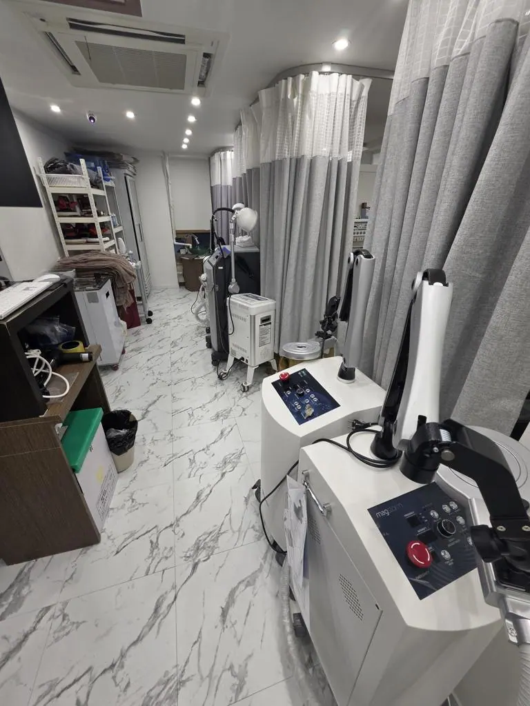
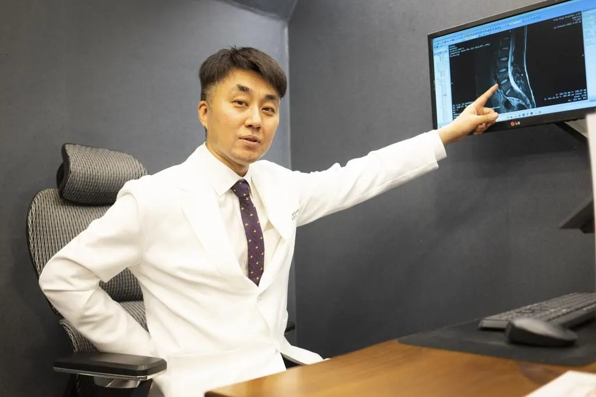

허리, 목·어깨, 무릎, 발바닥처럼 일상 동작에서 아픈 분을 위한 안내입니다. 좋은꿈참사랑한의원은 '어디가 아프다'보다 '어떤 동작에서 불편한가'를 먼저 여쭙고, 아픈 곳 주변까지 넓게 살핍니다.

아픈 곳과 원인이 있는 곳은 다를 수 있습니다
목, 어깨, 허리, 무릎의 통증에는 근육, 인대, 관절, 신경 등 여러 구조가 관여합니다. 통증이 느껴지는 곳과 통증에 영향을 주는 곳이 반드시 같지는 않습니다. 그래서 아픈 곳만 보지 않고 몸이 어떻게 움직이는지 함께 살핍니다.
이런 분께
- 목·허리 통증이 좋아졌다 나빠졌다를 반복하는 분
- 오래 앉아 일하는 직장인, 수험생
- 어깨가 굳어 팔을 올리기 불편한 분
- 계단을 오르내릴 때 무릎이 불편한 분
- MRI에서 디스크 소견을 듣고 걱정되는 분
- 통증 때문에 걷기와 활동이 줄어든 어르신
이렇게 진료합니다
다리 힘이 빠지거나 대소변 조절이 어렵다면 바로 큰 병원 진료가 필요합니다.
- 문진: 언제부터, 어떤 동작에서, 어디가 아픈지 여쭙니다.
- 진찰: 움직임, 압통, 근력, 저림·감각 같은 신경학적 증상을 확인합니다.
- 초음파 평가: 필요하면 근육·힘줄·인대의 상태를 초음파로 함께 봅니다.
- 치료 계획: 침, 약침, 추나, 체외충격파, 물리치료, 한약 가운데 지금 필요한 치료를 고르고 설명해 드립니다.
- 재평가: 다음 진료 때 변화를 확인하고 계획을 조정합니다.
통증을 동작으로 나눠 보는 이유
같은 무릎 통증도 계단을 오를 때와 내려갈 때, 앉았다 일어설 때 불편한 위치가 다릅니다. 동작을 기준으로 이야기하면 관련된 근육·관절·자세를 좁혀 가기 쉽고, 다음 방문에서 달라진 점도 같은 동작으로 확인할 수 있습니다.
통증이 시작된 시점, 하루 중 언제 심한지, 쉬면 나아지는지도 중요한 단서입니다. 아침에 뻣뻣하다가 움직이면 풀리는지, 오후로 갈수록 심해지는지에 따라 살필 부분이 달라집니다.
상담에서 자주 듣는 통증
통증은 아픈 곳 한 군데보다 연결된 부위에서 시작되는 경우도 있습니다. 예를 들어 무릎 통증이 발목이나 골반의 움직임과 함께 나타나기도 해 주변까지 함께 봅니다.
- 오래 앉았다 일어설 때 허리 통증
- 고개를 숙이고 일한 뒤 목·어깨 뻐근함
- 계단을 내려갈 때 무릎 앞쪽 통증
- 아침 첫발을 디딜 때 발뒤꿈치 통증
먼저 이렇게 여쭙니다
- 언제부터, 어떤 동작에서 아픈가요?
- 밤에 쉬어도 아픈가요?
- 저림이나 힘 빠짐이 함께 있나요?
- 최근 넘어지거나 부딪힌 적이 있나요?
생활에서 먼저 해 볼 것
찜질은 붓고 뜨거운 급성기에는 차갑게, 오래된 뻐근함에는 따뜻하게 하는 것이 일반적인 기준입니다. 어느 쪽이 맞는지 헷갈리면 진료 때 여쭤보세요.
- 30~40분마다 일어나 자세 바꾸기
- 아픈 동작은 줄이되 몸을 완전히 멈추지는 않기
- 모니터를 눈높이에 맞추기
- 통증이 심해지는 동작과 시간을 메모하기
한의원에서 함께 살피는 것
아픈 지점만이 아니라 주변 근육과 자세, 걷는 모습까지 봅니다. 필요하다고 판단될 때 초음파로 조직 상태를 확인하고 침, 약침, 추나, 체외충격파, 맥스톰 자기장 치료기, IS400 극초단파 온열 장비 등을 상태에 맞게 이어서 씁니다. 반응을 보며 방법을 조정하고, 충분한 반응이 없으면 다른 방법이나 다른 의료기관 진료를 안내합니다.
한의학에서는 통증을 이렇게 함께 봅니다
한의학에서는 통증을 기혈의 흐름과 근육·힘줄의 긴장, 몸의 온기와 함께 봅니다. 비 오는 날 더 쑤시는지, 따뜻하게 하면 편한지, 피곤할 때 심해지는지 같은 질문을 드리는 이유입니다. 이런 답을 진찰 내용과 함께 보고 침, 추나, 온열 등 방법을 정합니다.
- 날씨나 계절에 따라 달라지는지
- 따뜻하게 하면 편해지는지
- 피곤하거나 잠이 부족할 때 심해지는지
이럴 때는 다른 진료를 먼저 받으세요
- 다리 힘이 빠지거나 대소변 조절이 어려울 때: 응급실
- 넘어진 뒤 붓고 모양이 달라 보일 때: 영상검사 먼저
- 열이 나면서 아플 때
- 밤에 쉬어도 심해지거나 체중이 이유 없이 줄 때
좋은꿈참사랑한의원 진료는 이렇게 진행됩니다
접수 후 상담에서 불편한 동작을 듣고, 필요한 진찰을 거쳐 오늘 상태에 맞는 치료를 진행합니다. 치료 뒤 같은 동작으로 다시 확인하고, 다음 진료에서는 그 변화부터 이어서 여쭙습니다.
치료 계획은 한 번에 정해 두기보다 반응을 보며 함께 조정합니다. 지난번과 비교해 덜 불편해진 동작, 그대로인 동작을 말씀해 주시면 다음 진료에 반영합니다.
상도동·노량진에서
상도동은 언덕과 계단이 많아 무릎과 허리 이야기가 자주 나오고, 노량진 학원가와 사무실에서는 오래 앉아 있는 자세 때문에 목·어깨가 굳기 쉽습니다. 좋은꿈참사랑한의원은 상도역 3번 출구와 노량진역 3번 출구(마을버스 동작01번) 어느 쪽에서든 오기 쉽고, 평일 저녁 8시까지 진료합니다.
자주 묻는 질문
MRI에서 디스크가 있다고 하면 꼭 치료해야 하나요?
영상 소견과 실제 통증은 항상 일치하지는 않습니다. 영상 결과와 함께 증상, 진찰 소견, 생활에서 불편한 정도를 종합해 방향을 정합니다. 다른 병원 검사 결과는 가져오시면 참고하겠습니다.
근육만 풀면 되는 것 아닌가요?
근육 긴장이 원인인 경우도 있지만 관절, 인대, 신경, 자세 습관이 함께 얽혀 있는 경우가 많습니다. 원인을 구분해야 치료도 달라집니다.
무릎이 아프면 운동을 쉬어야 하나요?
상태에 따라 다릅니다. 무조건 쉬면 근력이 떨어질 수 있어, 통증 정도에 맞는 활동 범위를 함께 정합니다.
상도역 근처에서 허리 통증 진료를 하는 한의원이 있나요?
좋은꿈참사랑한의원이 상도역 3번 출구에서 약 400m 거리에 있습니다. 진료시간은 평일 09:30~20:00(점심 13:00~14:00), 토·일·공휴일 09:30~15:00입니다.
어깨가 아픈데 초음파로 볼 수 있나요?
필요하다고 판단될 때 초음파로 통증 부위의 조직 상태를 확인합니다. 모든 분이 같은 검사를 받지는 않습니다.
통증 치료는 여러 가지를 한 번에 하나요?
필요에 따라 조합합니다. 많이 받는다고 좋은 것이 아니라, 오늘 상태에 맞는 치료를 고르는 것이 중요합니다. 침, 약침, 추나, 체외충격파, 온열 장비 등을 필요한 만큼만 연결합니다.
병원에서 찍은 MRI 결과를 가져가야 하나요?
판독지나 진단서가 있으면 가져오세요. 이전 검사와 진료 내용을 이어서 보는 데 참고합니다.
아픈데 운동해도 되나요?
통증이 심해지는 동작은 줄이고, 어떤 움직임이 괜찮은지는 진찰 후 함께 정합니다.
주말에도 통증 진료를 하나요?
토·일·공휴일에도 오전 9시 30분부터 오후 3시까지 진료하며, 이때는 점심시간이 없습니다.
주차할 수 있나요?
건물 옆 뒤쪽 주차 공간 2면과 옆 하늘빛교회(구 노량진감리교회) 지하주차장을 이용하실 수 있습니다.
오래된 통증도 상담할 수 있나요?
네. 오래된 통증은 몸이 통증에 예민해져 있는 경우도 있어 반응을 보며 방법을 조정하고, 필요하면 다른 의료기관 진료를 안내합니다.
직장인인데 퇴근 후에 갈 수 있나요?
평일은 오후 8시까지 진료합니다. 네이버 예약이나 02-815-7510으로 미리 예약하실 수 있습니다.
감수: 좋은꿈참사랑한의원 대표원장 이종호 · 마지막 확인 2026-11-25 · 일반적인 건강 정보이며 진단·치료를 대신하지 않습니다.
통증·추나 글 모아 보기 (63편)

겨울에 두꺼운 외투 위로 아기띠를 하고 언덕길을 오가다 어깨와 등이 결릴 때는 어떻게 살피나요?
겨울에 두꺼운 패딩 위로 아기띠를 하면 끈이 느슨해지고 아기 위치가 내려가 어깨와 날개뼈 사이, 허리에 부담이 몰리기 쉬워, 아기띠 착용 높이와 외출 동선, 쉬는 간격부터 함께 살핍니다.
수정 2026-11-25

설 음식을 준비하며 오래 서 있으면 허리가 끊어질 듯 아픈 것은 어떻게 살피나요?
명절 음식을 준비하며 몇 시간씩 서서 일하면 허리와 종아리에 피로가 쌓이기 쉬워, 통증이 시작되는 시간과 쉬면 풀리는지를 먼저 묻고 서는 자세와 쉬는 간격부터 함께 정리합니다.
수정 2026-11-25

약침을 맞은 날 운동이나 목욕을 해도 되나요?
약침을 맞은 날은 놓은 자리가 쉬도록 격한 운동과 뜨거운 목욕, 사우나는 피하고 가벼운 샤워와 산책 정도로 지내는 편이 무난하며, 붓기나 열감이 이어지면 연락해 주시면 됩니다.
수정 2026-11-25

김장 때 바닥에 쪼그려 앉아 일한 뒤 허리와 무릎이 아프면 어떻게 살피나요?
바닥에 쪼그려 앉아 몇 시간 김장을 하면 허리와 무릎에 부담이 몰릴 수 있어, 일어설 때의 통증과 다리 저림을 먼저 묻고 앉는 높이와 쉬는 간격부터 함께 점검합니다.
수정 2026-11-25

김장을 하고 난 다음 날 손목과 엄지 쪽이 시큰할 때는 어떻게 살피나요?
김장 다음 날 손목과 엄지 쪽이 시큰한 것은 배추를 쥐고 비트는 동작을 오래 반복한 뒤 흔히 겪는 일이라, 아픈 동작과 붓기를 먼저 묻고 며칠 손을 덜 쓰는 요령부터 함께 정리합니다.
수정 2026-11-25
한파에 어깨를 움츠리고 출근한 날 목과 어깨가 굳으면 어떻게 살피나요?
추운 날 어깨를 잔뜩 올리고 걷는 자세가 이어지면 목과 어깨 근육이 굳기 쉬워, 통증이 심한 시간대와 목을 돌릴 때의 느낌을 먼저 묻고 옷차림과 출근길 자세부터 함께 점검합니다.
수정 2026-11-25

택시 운전을 오래 하다 차에서 내릴 때 허리를 바로 펴기 힘들 때는 어떻게 살피나요?
택시 운전을 오래 해 차에서 내릴 때 허리를 펴기 힘들다면 1~2시간마다 내려 허리를 천천히 젖히고 걷기, 엉덩이를 좌석 깊숙이 넣어 앉기, 두 다리를 먼저 내린 뒤 일어나기부터 해 보시기를 권합니다.
수정 2026-11-24

독서실 의자에 오래 앉아 꼬리뼈와 엉덩이가 아플 때는 어떻게 하나요?
독서실 의자에 오래 앉아 꼬리뼈와 엉덩이가 아플 때는 가운데가 파인 방석, 깊숙이 앉기, 50분마다 일어나 걷기부터 해 보고, 다리 저림이 함께 있으면 허리와 골반, 앉는 자세를 함께 살핍니다.
수정 2026-11-24
눈 온 다음 날 집 앞 눈을 치운 뒤 허리와 어깨가 결릴 때는 어떻게 하나요?
눈을 치울 때는 허리를 숙인 채 무거운 눈을 들어 비트는 동작이 반복되어 허리와 어깨에 부담이 쌓일 수 있습니다. 얼마나 오래 어떤 자세로 치웠는지 먼저 여쭙고 무리 없이 치우는 방법을 함께 찾습니다.
수정 2026-11-24

장바구니를 들고 언덕길을 오르고 나면 손목과 팔꿈치가 시큰할 때는 어떻게 살피나요?
무거운 장바구니를 한 손으로 들고 언덕을 오르면 손목과 팔꿈치 바깥쪽에 부담이 몰릴 수 있어, 드는 방법과 무게, 아픈 동작을 먼저 묻고 짐을 나누는 생활 요령부터 함께 정리합니다.
수정 2026-11-24

동네 공원 걷기를 새로 시작했는데 발바닥이 아플 때는 어떻게 살피나요?
걷기 운동을 갑자기 늘리면 발바닥과 뒤꿈치에 부담이 쌓일 수 있어, 걷는 시간과 길의 경사, 신발, 아침 첫발 통증 여부를 먼저 묻고 걷는 양을 조절하는 방법을 함께 정리합니다.
수정 2026-11-24

아침마다 내리막길로 출근하는데 정강이 앞쪽과 발목이 뻐근할 때는 어떻게 살피나요?
매일 내리막길을 빠르게 걸으면 정강이 앞쪽 근육과 발목이 브레이크 역할을 하느라 뻐근해질 수 있어, 걷는 속도와 신발, 아픈 시간대를 먼저 묻고 내려가는 걸음부터 함께 바꿉니다.
수정 2026-11-24

공원 야외 운동기구로 허리를 돌리다가 아파졌을 때는 어떻게 하나요?
공원 야외 운동기구로 허리를 세게 돌리거나 반동을 주면 허리 근육과 관절에 부담이 갈 수 있습니다. 어떤 기구를 얼마나 했는지와 아픈 동작을 먼저 여쭙고 무리 없이 움직이는 방법을 함께 찾습니다.
수정 2026-11-24

노량진역에서 환승하며 계단을 오르내리는 출퇴근길에 무릎이 시큰할 때는?
환승 계단을 오르내리며 무릎이 시큰할 때는 내려갈 때 난간을 잡고 한 칸씩 천천히, 에스컬레이터를 섞어 쓰는 것부터 시작하고, 붓거나 걸리는 느낌이 있으면 걷는 습관과 무릎 주변을 함께 살핍니다.
수정 2026-11-24
하루 종일 서서 강의하면 허리와 종아리가 뻐근할 때는 어떻게 하나요?
하루 종일 서서 강의해 허리와 종아리가 뻐근할 때는 쿠션 있는 신발, 체중 번갈아 싣기, 쉬는 시간 발목 움직이기부터 해 보고, 다리가 자주 붓거나 쥐가 나면 자세와 골반, 생활 습관을 함께 살핍니다.
수정 2026-11-24

판서를 많이 하는 학원 강사의 어깨가 아플 때는 어떻게 살피나요?
판서로 팔을 오래 들어 어깨가 아플 때는 판서 높이를 눈높이 근처로 낮추고 수업 사이에 팔을 내려 쉬는 것부터 시작하며, 팔을 들 때 걸리거나 밤에 아프면 아픈 동작과 어깨 주변을 함께 살핍니다.
수정 2026-11-24

한강공원에서 달리기를 하고 나면 무릎 바깥쪽이 아플 때는 어떻게 살피나요?
달리기 뒤 무릎 바깥쪽 통증은 거리를 갑자기 늘렸거나 신발, 달리는 길, 엉덩이와 허벅지의 긴장과 관련된 경우가 많습니다. 언제부터 어떤 구간에서 아픈지 먼저 여쭙고 달리는 습관을 함께 점검합니다.
수정 2026-11-24
손주를 돌보는 어르신이 아이를 안아 올리다 허리와 무릎이 아플 때는 어떻게 살피나요?
손주를 안아 올리다 허리와 무릎이 아프다면 허리 대신 무릎을 굽혀 아이를 몸 가까이 붙여 들고, 바닥보다 낮은 의자에 앉아 놀아 주며 아기띠나 유모차로 안고 걷는 시간을 줄이는 것부터 해 보시기를 권합니다.
수정 2026-11-24

체력시험 준비로 갑자기 운동량을 늘린 뒤 무릎과 종아리가 아플 때는?
체력시험 준비로 운동량을 갑자기 늘려 무릎과 종아리가 아프다면 거리와 횟수를 조금씩 늘리고 운동 전후 몸풀기, 쿠션 있는 운동화부터 챙기며, 뼈를 누를 때 날카롭게 아프면 먼저 확인이 필요합니다.
수정 2026-11-24
필기를 많이 하는 수험생의 손목과 엄지가 시큰할 때는 어떻게 하나요?
필기를 많이 해 손목과 엄지가 시큰할 때는 굵은 펜이나 그립으로 바꾸고 30분마다 손을 쉬게 하는 것부터 시작하며, 엄지를 움직일 때 걸리거나 손가락이 저리면 아픈 위치와 손 쓰는 습관을 함께 살핍니다.
수정 2026-11-24

배달 오토바이를 오래 타서 허리가 뻐근하고 손목·손이 저릴 때는 어떻게 살피나요?
배달 오토바이를 오래 타 허리가 뻐근하고 손이 저리다면 배달 사이 내려서 허리 젖히기와 손목 털기, 손목이 꺾이지 않게 핸들 쥐기, 겨울철 보온부터 챙기고, 손에 힘이 빠지면 먼저 확인이 필요합니다.
수정 2026-11-24

추운 아침 재채기 한 번에 허리가 찌릿했을 때는 어떻게 살피나요?
추운 아침에는 몸이 굳어 있어 재채기나 기침처럼 갑작스러운 움직임에도 허리가 찌릿할 수 있습니다. 그 뒤 어떤 동작이 불편한지와 다리 저림 여부를 먼저 여쭙고 아침 습관을 함께 점검합니다.
수정 2026-11-24
요가를 하다가 허벅지 뒤와 엉덩이가 당기는 것은 어떻게 살피나요?
요가에서 허벅지 뒤와 엉덩이가 당기는 느낌은 유연성 차이와 동작 깊이에 따라 달라집니다. 어떤 동작에서 당기는지, 시원한 당김인지 찌릿한 통증인지 먼저 묻고 무리 없이 하는 방법을 함께 점검합니다.
수정 2026-11-24

20대인데도 책상 앞에서 목과 어깨가 벌써 뻐근할 때는 어떻게 살피나요?
젊은 나이에도 하루 대부분을 책상 앞에서 보내면 목과 어깨가 일찍 굳을 수 있어, 앉는 시간과 화면 높이, 쉬는 간격을 먼저 묻고 자세와 생활 리듬부터 함께 점검합니다.
수정 2026-11-24

아이를 씻기고 안아 올릴 때 허리를 숙이는 동작이 반복되면 어떻게 하나요?
욕조 앞에서 허리를 숙여 아이를 씻기고 안아 올리는 동작이 반복되면 허리에 부담이 쌓일 수 있어, 아픈 순간과 욕조·침대 높이, 들어 올리는 순서를 먼저 확인하고 무릎을 쓰는 자세로 바꾸는 방법을 함께 점검합니다.
수정 2026-11-24
아기를 안고 달래느라 손목과 어깨가 아픈 부모는 자세를 어떻게 점검하나요?
아기를 하루 종일 안고 달래면 손목과 엄지, 어깨에 부담이 쌓일 수 있어, 안는 방향과 시간, 수유 자세를 먼저 묻고 팔 전체로 무게를 나누는 방법과 보호자끼리 시간을 나누는 방법을 함께 점검합니다.
수정 2026-11-24
서서 수업하는 교사는 목과 어깨, 목소리가 함께 지칠 때 어떻게 살피나요?
오래 서서 판서하고 말하는 교사는 목과 어깨가 굳고 목소리까지 쉽게 지칠 수 있습니다. 수업 중 자세와 말하는 시간, 쉬는 방법을 먼저 묻고 목과 목소리를 함께 아끼는 습관을 점검합니다.
수정 2026-11-24
60대에 걷기 운동을 새로 시작할 때 무릎과 허리는 어떻게 점검하나요?
60대에 걷기를 새로 시작하면 무릎과 허리에 낯선 부담이 생길 수 있어, 걷는 시간과 길, 신발과 이전 병력을 먼저 묻고 하루 10~15분부터 일주일 단위로 조금씩 늘리는 방법을 안내합니다.
수정 2026-11-24

60대에 계단에서 난간을 꼭 잡게 되었다면 몸에서 무엇을 살펴봐야 하나요?
계단에서 난간을 꼭 잡게 되었다면 다리 힘과 균형, 시력과 신발, 복용 약 같은 여러 요인이 겹쳤다는 신호일 수 있어, 언제부터 어떤 상황에서 불안한지를 먼저 묻고 안전한 생활 환경과 함께 점검합니다.
수정 2026-11-24

70대 어르신 집의 욕실과 현관은 낙상을 줄이려면 어떻게 점검하나요?
낙상은 몸의 힘뿐 아니라 미끄러운 욕실 바닥, 현관 문턱, 어두운 밤길 같은 집 환경이 함께 영향을 주는 경우가 많아, 넘어질 뻔한 장소와 상황을 먼저 묻고 가족이 욕실과 현관을 함께 점검하도록 안내합니다.
수정 2026-11-24
같은 허리 통증인데 왜 사람마다 쓰는 장비가 다른가요?
같은 허리 통증이라도 통증이 생긴 시기, 불편한 동작, 피부 감각과 건강 상태가 달라, 진찰 후 침·추나·온열·체외충격파 등 필요한 방법을 골라 씁니다.
수정 2026-11-24
약침은 무엇이고 시술 전에 무엇을 알려야 하나요?
약침은 한약재에서 추출·정제한 약액을 침으로 경혈이나 통증 부위 주변에 소량 주입하는 방법으로, 쓸지 말지는 진찰 후 정하며 알레르기, 출혈 경향, 임신 가능성, 복용 중인 약을 미리 알려야 합니다.
수정 2026-11-24

목에서 팔로 저림이 내려올 때(목디스크 의심)는 어떤 점을 먼저 확인하나요?
목에서 팔과 손가락으로 저림이 내려올 때는 어느 손가락이 저린지와 고개를 젖힐 때의 변화, 팔 힘 빠짐 여부를 먼저 묻고 힘이 빠지거나 걸음이 불안정하면 병원 검사를 먼저 권합니다.
수정 2026-11-24

근육이 아픈 것인지 관절이 아픈 것인지 어떻게 짚어서 말하나요?
아픈 곳이 살이 많은 부분인지 뼈가 만나는 마디인지, 누르면 아픈지 움직일 때 아픈지를 손으로 짚어 보여 주시면 어떤 확인이 먼저 필요한지 정하기 쉬워집니다.
수정 2026-11-24
극초단파 치료기는 어떤 장비인가요?
극초단파 치료기는 극초단파로 치료 부위를 따뜻하게 하는 온열 장비로, 좋은꿈참사랑한의원에서는 IS400을 쓰며 피부 감각과 건강 상태, 몸속 금속 여부를 먼저 확인하고 온도와 시간을 맞춥니다.
수정 2026-11-24
자기장 치료기는 어떤 장비인가요?
자기장 치료기는 자기장을 이용하는 물리요법 장비로, 좋은꿈참사랑한의원에서는 맥스톰 자기장 치료기를 진찰 후 필요하다고 판단될 때 침·추나 등과 이어서 쓰며, 체내 금속이나 전자 의료기기 여부를 먼저 확인합니다.
수정 2026-11-24
온열 치료를 받을 때 피부 감각을 먼저 묻는 이유는요?
온열 치료는 피부 감각이 둔하거나 혈액순환에 문제가 있으면 뜨거움을 늦게 느낄 수 있어, 치료 전 감각과 건강 상태를 확인하고 온도와 시간을 매번 맞춥니다.
수정 2026-11-24
미용 일을 오래 하면 어깨와 목이 뻐근한 것은 어떻게 살피나요?
미용 일은 팔을 어깨 높이로 든 채 고개를 숙이는 시간이 길어 어깨와 목에 부담이 쌓이기 쉽습니다. 언제 가장 뻐근한지와 일하는 자세를 먼저 묻고, 쉬는 간격과 작업 높이를 함께 점검합니다.
수정 2026-11-24
헬스장에서 어깨 운동을 한 뒤 어깨 앞쪽이 아플 때는 무엇을 먼저 확인하나요?
웨이트 운동 뒤 어깨 앞쪽 통증은 운동 종류와 무게, 자세, 쉬는 날에 따라 양상이 달라집니다. 어떤 동작에서 아픈지와 최근 운동 기록을 먼저 묻고, 무게 조절과 쉬는 방법을 함께 점검합니다.
수정 2026-11-24
골프 스윙을 한 뒤 허리가 비틀리듯 아픈 것은 어떻게 살피나요?
골프 스윙은 허리를 한쪽으로 크게 비트는 동작이라 연습량이 늘면 허리 한쪽에 부담이 쌓이기 쉽습니다. 스윙의 어느 구간에서 아픈지와 연습량, 준비운동을 먼저 묻고 몸 쓰는 방법을 함께 점검합니다.
수정 2026-11-24
40대에 어깨가 가끔 뻐근할 때 굳어 가기 전에 생활에서 챙길 것은 무엇인가요?
40대에 어깨가 가끔 뻐근하고 팔을 뒤로 돌릴 때 걸리는 느낌이 있다면 쓰는 범위가 줄고 있다는 신호일 수 있어, 팔을 올리는 범위와 자는 자세를 먼저 묻고 굳기 전에 생활 습관부터 점검합니다.
수정 2026-11-24
50대에 계단을 오르내릴 때 무릎이 불안한 느낌이 들면 어떻게 대비하나요?
계단에서 무릎이 불안하게 느껴지는 것은 다리 힘과 균형, 신발과 난간 습관이 함께 영향을 주는 경우가 많아, 오를 때와 내려올 때 중 언제 불안한지와 걷는 습관을 먼저 묻고 계단이 많은 생활에 맞춰 점검합니다.
수정 2026-11-24
요리나 공예처럼 손을 많이 쓰는 50대의 손가락 마디가 욱신거릴 때는 어떻게 살피나요?
요리, 김장, 뜨개질처럼 손을 많이 쓰는 일은 손가락 마디에 반복 부담을 주기 쉬워, 어느 마디가 어떤 동작에서 욱신거리는지와 쉬는 간격, 차가운 물 사용을 먼저 묻고 손 쓰는 방식부터 점검합니다.
수정 2026-11-24
농사일로 쪼그려 앉고 허리를 굽히면 무릎과 허리가 함께 아픈 것은 어떻게 살피나요?
밭일이나 텃밭 가꾸기에서 쪼그려 앉고 허리를 굽히는 동작이 반복되면 허리와 무릎이 함께 뻐근해지기 쉽습니다. 작업 시간과 자세, 일어설 때 어디가 먼저 불편한지 묻고 쉬는 방법과 도구를 함께 점검합니다.
수정 2026-11-24
80대 어르신이 의자에서 일어서기 어려워질 때 가족은 무엇을 살펴보나요?
어르신이 의자에서 일어서기 어려워지는 것은 다리 힘과 관절, 어지럼과 복용 약 등 여러 요인이 겹칠 수 있어, 가족이 언제부터 어떤 순간에 어려워하는지 관찰해 전해 주시면 상담이 정확해집니다.
수정 2026-11-24
자전거를 오래 타면 손목과 목, 엉덩이가 아픈 것은 어떻게 살피나요?
자전거를 오래 타면 상체를 숙인 채 손목과 목에 체중이 실리고 안장에 닿는 부위가 눌리기 쉽습니다. 타는 시간과 안장·핸들 높이를 먼저 묻고, 자세와 쉬는 간격을 함께 점검합니다.
수정 2026-11-24
배달 일로 오토바이나 자전거를 타면 손목과 어깨가 저린 것은 어떻게 살피나요?
핸들을 오래 쥐고 진동을 받는 배달 일은 손목과 어깨, 목에 부담이 쌓이기 쉽습니다. 저림이 오는 시점과 손가락 위치, 핸들 잡는 자세를 먼저 묻고 쉬는 간격과 장비를 함께 점검합니다.
수정 2026-11-24
계산대에서 몸을 비틀며 일하면 허리 한쪽이 아픈 것은 어떻게 살피나요?
계산대에서 물건을 받아 스캔하고 몸을 돌려 건네는 동작은 같은 방향으로 허리를 비틀게 만들기 쉽습니다. 어느 쪽이 아픈지와 동작 방향을 먼저 묻고, 서 있는 방식과 발 위치를 함께 점검합니다.
수정 2026-11-24
환자를 옮기고 돌보는 일을 하면 허리가 뻐근한 것은 어떻게 살피나요?
간병이나 요양 일에서 사람을 일으키고 옮기는 동작은 허리에 순간적인 부담이 크기 쉽습니다. 어떤 동작에서 아픈지와 하루 반복 횟수를 먼저 묻고, 몸 쓰는 방법과 쉬는 간격을 함께 점검합니다.
수정 2026-11-24
병원에서 찍은 MRI나 X-ray 자료를 한의원에 가져가면 어떻게 쓰이나요?
병원에서 찍은 MRI나 X-ray 자료는 불편한 부위를 이해하는 참고 자료로 쓰이며, 판독지와 촬영 날짜, 병원에서 들은 설명을 함께 가져오면 상담이 더 구체적이 됩니다.
수정 2026-11-24
침 치료를 처음 받기 전에 무엇을 알려 주면 되나요?
침 치료를 처음 받기 전에는 복용 중인 약, 특히 피를 묽게 하는 약과 피가 잘 멎지 않는 경향, 임신 여부, 예전에 어지러웠던 경험을 알려 주시면 더 안전하게 진행할 수 있습니다.
수정 2026-11-24
추운 날 어깨가 움츠러들고 뻐근한 것은 어떻게 살피나요?
추운 날 어깨를 올리고 움츠린 채 지내면 어깨 위쪽과 목 뒤 근육이 쉬지 못해 뻐근해지기 쉬워, 자세와 하루 습관을 먼저 묻고 살피며 팔 저림이나 가슴 통증이 함께 있으면 병원 확인을 먼저 권합니다.
수정 2026-11-24
거북목과 라운드숄더는 집에서 어떤 스트레칭을 해 볼 수 있나요?
가슴을 열고 목 뒤를 길게 하는 가벼운 스트레칭을 하루 서너 번 짧게 해 볼 수 있으며, 팔 저림이 있거나 동작 중 통증이 심해지면 멈추고 진료를 권합니다.
수정 2026-11-24
오래 공부하는 학생의 책상과 의자는 허리를 위해 어떻게 맞추나요?
발이 바닥에 닿고 무릎과 엉덩이 높이가 비슷하며 책이나 화면이 눈높이에 가깝도록 책상과 의자를 맞추면, 오래 공부할 때 허리와 목의 부담을 줄이는 데 도움이 될 수 있습니다.
수정 2026-11-24
발바닥 통증은 어떤 종류가 있고 어떻게 구분해서 살피나요?
발바닥 통증은 뒤꿈치·발 중간·발 앞쪽처럼 아픈 위치와 아침 첫걸음·오래 서 있을 때처럼 아픈 때에 따라 살필 것이 달라, 위치와 시간대를 먼저 나눠 보고 붓기나 저림이 있으면 진료를 권합니다.
수정 2026-11-24
자고 일어나면 목이 아픈 것은 베개 때문일까요?
자고 일어나 목이 아픈 것은 베개 높이와 자는 자세, 낮 동안 쌓인 목 긴장이 겹친 경우가 많아 자세와 생활을 함께 묻고 살피며, 팔 저림이나 심한 두통이 있으면 먼저 병원 진료를 권합니다.
수정 2026-11-24
아침에 일어나면 허리가 뻣뻣한 것은 왜 그런가요?
아침 허리 뻣뻣함은 밤새 같은 자세로 있던 근육과 관절이 굳었다가 움직이며 풀리는 경우가 많아, 몇 분 가는지와 움직이면 풀리는지를 먼저 묻고 잠자리와 낮 자세를 함께 살핍니다.
수정 2026-11-24
허리 디스크 초기 신호와 다리 저림은 어떻게 구분하나요?
허리 통증과 함께 한쪽 다리로 뻗는 저림, 앉거나 기침할 때 심해지는 통증이 있으면 디스크 가능성을 생각해 볼 수 있으며, 대소변 이상이나 다리 힘 빠짐은 바로 응급 확인이 필요한 신호입니다.
수정 2026-11-24
오래 앉아 공부하거나 일할 때 허리와 골반은 얼마 간격으로 쉬어 주나요?
오래 앉아 있을 때는 30~50분마다 일어나 1~2분 걷고 자세를 바꾸는 것이 허리와 골반 부담을 줄이는 기본이며, 다리 저림이나 힘 빠짐이 있으면 진료를 권합니다.
수정 2026-11-24
장거리 운전 뒤 허리와 다리가 뻐근할 때는 어떻게 하나요?
장거리 운전 뒤 허리와 다리가 뻐근한 것은 오래 같은 자세로 앉아 있던 탓인 경우가 많아 중간 휴식과 가벼운 스트레칭을 챙기고, 다리 저림이나 힘 빠짐이 있으면 병원 진료를 먼저 권합니다.
수정 2026-11-24
계단을 내려갈 때 무릎이 아프면 한의원에서는 무엇을 먼저 묻나요?
계단을 내려갈 때 무릎이 아프면 통증 부위만이 아니라 어떤 동작에서 얼마나 불편한지를 먼저 묻고, 치료 뒤 같은 동작에서 달라진 점을 기록해 다음 진료에서 이어서 확인합니다.
수정 2026-11-25
옆구리와 등 뒤쪽이 아플 때 근육 문제인지 어떻게 구분해서 보나요?
몸을 움직이거나 누르면 달라지는 옆구리·등 통증은 근육과 관련 있는 경우가 있지만, 발열이나 소변 이상, 갑자기 심한 통증이 함께 있으면 내과나 응급실 진료를 먼저 권합니다.
수정 2026-11-24
한파가 오면 무릎과 손가락 관절이 시리고 뻣뻣한 것은 왜 그런가요?
추운 날 관절이 시리고 뻣뻣한 것은 움직임이 줄고 근육이 움츠러드는 영향이 겹친 경우가 많아, 어느 관절이 언제 불편한지 먼저 묻고 생활과 함께 살피며 붓고 열이 나면 병원 확인을 먼저 권합니다.
수정 2026-11-24